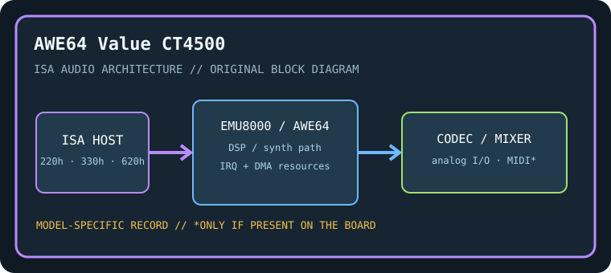

[ INDIVIDUAL COMPONENT // SOUND HARDWARE ]
Creative Sound Blaster AWE64 Value (CT4500)
CT4500 identifies the AWE64 Value ISA board; this is not the AWE64 Gold CT4390 already cataloged. Do not assume Gold-specific connectors, memory sockets, or bundled software.

Model-specific specifications
| Catalog identity / chipset / DSP | Creative Sound Blaster AWE64 Value (CT4500). Creative AWE64 integrated SB16-compatible controller and EMU8000-family wavetable/effects engine; CQM FM implementation rather than assuming a discrete Yamaha OPL3 on every AWE64. |
|---|---|
| Audio codec / conversion | Integrated Creative AWE64 stereo PCM conversion path; CT4500 is a Value board and codec/package details should be confirmed from PCB markings. |
| Bus / I/O / ports | 16-bit ISA. PnP-assigned SB16 base typically 220h; legacy FM decode typically 388h and MIDI/AWE interface resources commonly 330h/620h. Confirm the CTCM configuration report. |
| IRQ | PnP-assigned SB-compatible IRQ, commonly 5, 7, or 10; AWE MIDI/synth routing shares the card’s configured resources. |
| DMA | Typical SB16 low DMA 1 and high DMA 5; PnP assignment may differ. Configure applications with the values the card actually receives. |
| Driver / operating system | Creative CTCM/CTCU configuration and AWE utilities; period DOS Sound Blaster/AWE drivers and Windows 3.x/9x packages. Driver availability does not imply current Windows support. |
| Motherboard compatibility | 16-bit ISA slot plus PnP BIOS or Creative configuration software. Verify ISA PnP initialization on the target motherboard; resource conflicts and timing on later chipsets can prevent legacy DOS use. |
| Sound standards / interfaces | Sound Blaster 16 PCM, AWE/EMU8000 wavetable and effects, General MIDI/GS-compatible sample playback with suitable soundfont, and legacy FM emulation. |
| Connectors / power | ISA slot power; use only the analog, MIDI, CD-audio, and auxiliary connectors physically present on this exact board. Inspect the edge bracket, keyed headers, PCB revision, and manual before connecting. |
Compatibility & preservation notes
CT4500 identifies the AWE64 Value ISA board; this is not the AWE64 Gold CT4390 already cataloged. Do not assume Gold-specific connectors, memory sockets, or bundled software. The precise DSP/codec package, firmware, resource assignment, and OS driver release must be matched to the physical SKU. Record the actual base port, IRQ, DMA channels, driver version, motherboard chipset, and BIOS configuration used in a working test rather than copying family defaults.
- Photograph the complete model number, PCB revision, major IC markings, jumpers, connectors, and any daughterboard before service.
- Check DMA and IRQ reservations against storage, serial/parallel, and other ISA devices; test PCM, synthesis, and MIDI functions independently.
- Power down and unplug the host before fitting/removing ISA hardware. Keep the exact manual and original setup/driver media with the specimen.
Manufacturer manuals & archival sources
- Internet Archive — Creative AWE64 CT4500 user manualArchive catalog search for original manufacturer-authored manual/setup documentation for this model; confirm the full SKU and revision in any scan.
- Internet Archive — Creative AWE64 Value CT4500 software and driver diskArchive catalog search for preserved manufacturer driver, utility, or bundled software media for this specific board.
- Internet Archive — Creative Sound Blaster AWE64 Value CT4500 documentation archiveAdditional model-specific catalog records and manuals; use the physical board marking to exclude adjacent revisions and related products.
Archive search links are discovery records rather than claims that one particular scan is an original; verify provenance, revision and completeness before relying on a scanned setup guide.